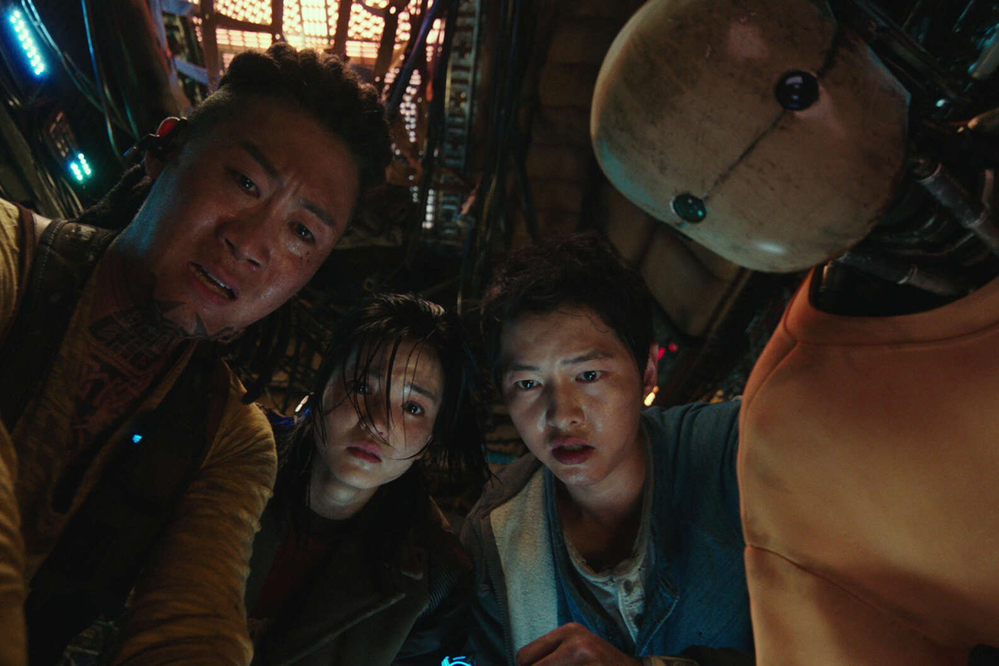
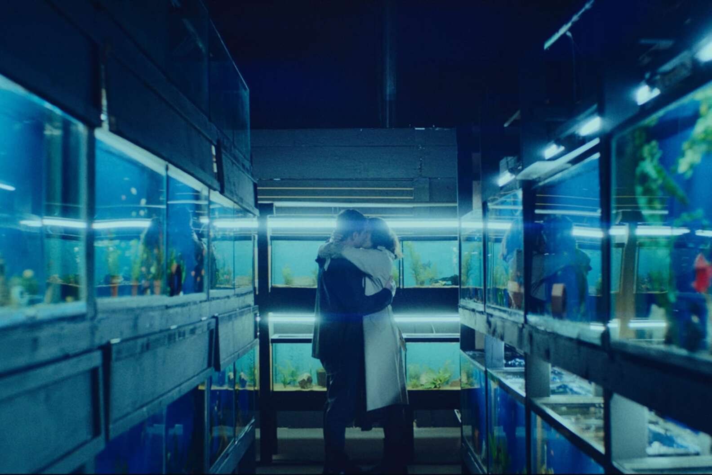
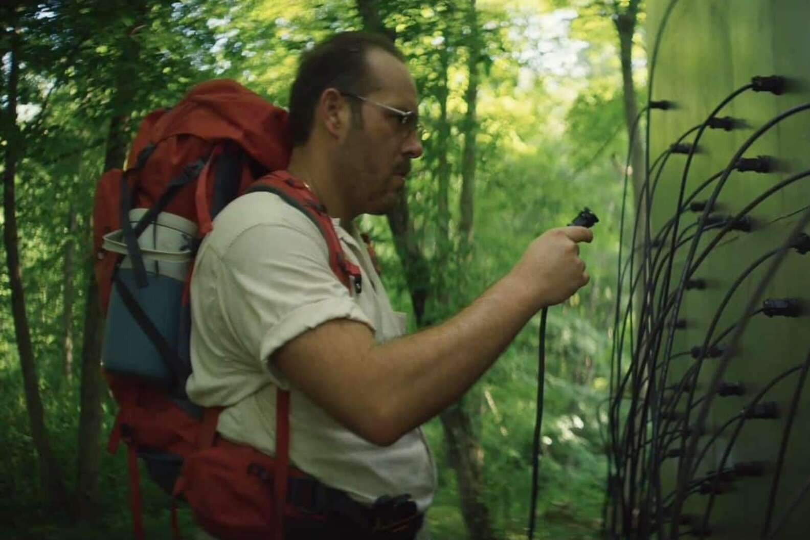
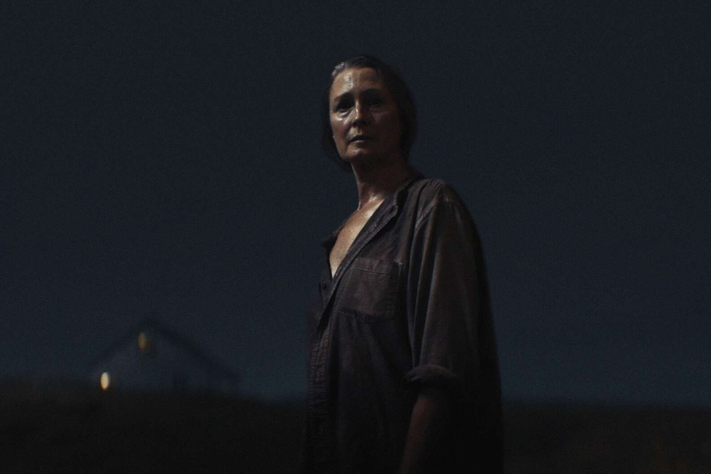

It: Chapter Two is an American supernatural horror film of 2019, a sequel to the 2017 film It, based on the 1986 novel of the same name by Stephen King. The film was directed by Andy Muschetti and written by Gary Doberman. The action takes place in 2016, 27 years after the events described in the first part of the film.
The Best Sci-Fi and Fantasy Movies of 2021
Space Sweepers
Last Dragon
Little Fish
Lapsis
Wanting Mare
Ono 2